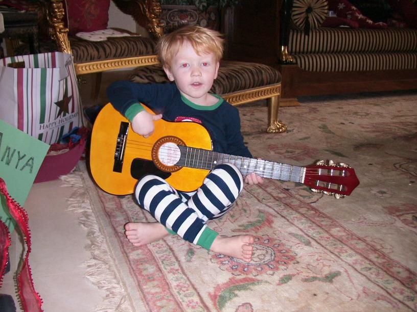

I'm Zach Pulichino, a current Northeastern student studying Computer Science and Economics.
Originally born in Seattle, Washington, I lived there for seven years. Moved to New York City then Westport, Connecticut which is where I spent the rest of my childhood.
Now a student at Northeastern University, I'm living in Boston full time studying Computer Science and Economics with the plan to get my MBA in Northeastern's Plus One program.